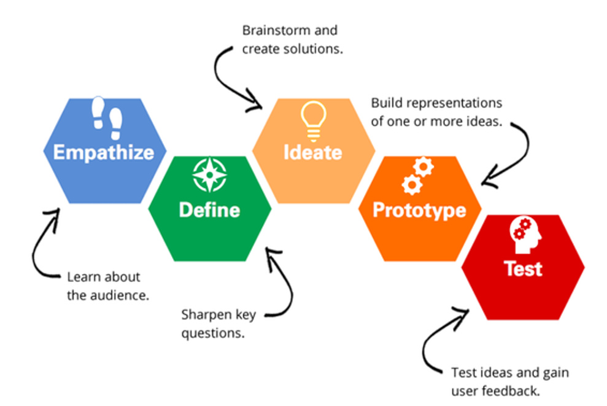
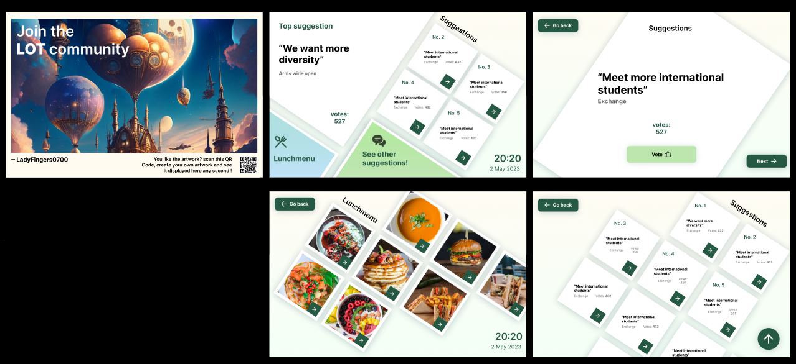

Leeswijzer
Deze leeswijzer heeft als doel om de lezer te informeren over mijn projecten waaraan ik heb gewerkt in semester 6. Alle inhoud hier zijn ook te lezen in de PDF in mijn portfolio, die te downloaden is in 'Leeswijzer PDF document'.
Vanwege de opzet van mijn portfolio waarin ik een one-page en pop-ups gebruik voor deliverables, is het helaas niet mogelijk om direct te linken naar specifieke leeruitkomsten of producten in de deliverables. Ik heb dit besproken met mijn semestercoach, en afgesproken dat ik een link plaats naar de deliverable en de gerelateerde producten te vermelden in 'Bewijs van leeruitkomsten'. In de uitleg over de projecten zijn de gerelateerde producten te vinden door met de muis over de links te zweven.
Voor de volgende keer zal ik hier zeker meer opletten voor toekomstige portfolio’s.
Portfolio
Simac
Woonbedrijf
Portfolio
De opdracht
Om mijn werk aan de beoordelaars te presenteren, stel ik een online portfolio op om mijn proces gedurende het semester te documenteren en valideren. Deze portfolio zal onder andere een leeswijzer, bewijsmateriaal en validatie bevatten van alle stappen die ik heb genomen voor mijn projecten gedurende het semester. De opzet van de portfolio en de leeswijzer moeten voldoen aan het onderstaande schema.
Aanpak
Voor het samenstellen van mijn portfolio heb ik eerst een projectplan opgesteld. Hierin heb ik de ontwikkelingsmethoden en de planning voor de komende twee weken vastgelegd.
Bij het opzetten van de portfolio had ik de keuze tussen het gebruik van een websitebouwer zoals WordPress, of het zelf programmeren ervan. Om mezelf meer uitdaging te bieden en mijn vaardigheden verder te ontwikkelen, heb ik dit keer besloten om mijn eigen portfolio te bouwen met code. Naast de gebruikelijke HTML en Javascript, heb ik ervoor gekozen om in dit project met SCSS te werken in plaats van gewoon CSS. Dit biedt voordelen zoals geneste code en het gebruik van variabelen.
Context
Voordat ik mijn portfolio ging bouwen, had ik al een aantal
aandachtspunten in gedachten:
- Doelgroep: Mijn portfolio is bedoeld voor docenten die al mijn
opleveringen en validaties willen bekijken om te bepalen of ik slaag
voor mijn semester.
- Interface: De interface van mijn portfolio moet duidelijk en
gebruiksvriendelijk zijn, zodat alles gemakkelijk te vinden en te
lezen is.
- Persoonlijk tintje: Ik wilde ook een persoonlijk tintje aan mijn
portfolio geven, zodat het meteen een eerste indruk van mij
weergeeft zonder gebruik van woorden
Om inspiratie op te doen, heb ik verschillende portfolio's van professionals bekeken op het gebied van ontwerp, UI en UX. Van de beste voorbeelden heb ik een compilatie gemaakt in de vorm van afbeeldingen.
Ontwerp
Na het onderzoeken van de context heb ik wireframes gemaakt voor mijn portfolio, om de structuur en basis van het ontwerp te bepalen. Mijn doel was om een eenvoudige navigatie te creëren, zodat het aantal vereiste klikken wordt verminderd en tijd wordt bespaard bij het navigeren tussen pagina's. Vervolgens heb ik een high-fidelity prototype ontwikkeld, gebaseerd op de gevonden inspiratie, de context en de feedback die ik heb ontvangen van verschillende mensen, waaronder mijn familie en docenten. Over het algemeen vonden ze het een duidelijk opzet met een mooi ontwerp.
Developing
Omdat ik al ervaring had met frontend-ontwikkeling van eerdere schoolopdrachten, lag de grootste uitdaging dit keer vooral bij het programmeren van JavaScript-functies .
Om mijn producten op een minimalistische manier te tonen, kwam ik op het idee om alle informatie op te delen in "kaarten" die overeenkomen met de juiste leeruitkomsten. Gebruikers kunnen op een kaart klikken om een pop-upvenster te openen met informatie, zonder dat ze naar een andere pagina hoeven te gaan. Ik heb dit idee besproken met mijn semestercoach en hij keurde het goed, omdat het op deze manier gemakkelijker is om mijn leeruitkomsten te beoordelen.
Voor het begrijpen van SCSS heb ik verschillende bronnen geraadpleegd, zoals YouTube-video's en tekstmateriaal. Hierdoor heb ik geleerd dat SCSS een uitbreiding is van CSS, met extra functies zoals geneste code en variabelen die CSS-code bevatten. Omdat de syntax hetzelfde werkt als CSS, heb ik het goed kunnen begrijpen en praktisch kunnen toepassen in mijn portfolio.
Eindresultaat
Met mijn bestaande kennis van ontwerp en programmeren heb ik succesvol mijn portfolio kunnen coderen. Naast HTML en JavaScript heb ik dit keer voor het eerst SCSS gebruikt in plaats van CSS, vanwege de extra voordelen die het biedt. Ik heb het portfolio-opzetmodel van mijn school als basis genomen en de UI geminimaliseerd om gemakkelijk te navigeren en informatie over mijn delivarbles te lezen.
Simac
De opdracht
In een traditionele werkcultuur is het gebruikelijk dat werknemers alleen aangesproken worden wanneer ze iets verkeerd doen, terwijl er vaak weinig aandacht is voor positieve acties. SIMAC streeft ernaar om dit te veranderen door een systeem te implementeren waarbij werknemers meer positieve feedback ontvangen voor hun inzet voor SIMAC. In een team van vijf personen werken we samen aan het bedenken en realiseren van dit systeem.
Aanpak
We hebben een projectplan opgesteld met onze aanpak en planning. We hanteren de Double Diamond-methode om het project in sprints te verdelen en te organiseren.
We hebben hiervoor een Trello bord gemaakt om alles bij te houden. Voor onderzoek gebruiken we CMD-methodes om ons onderzoek op peil te houden en de juiste, gerichte informatie te krijgen.
Discover
Onze opdracht was om een complimentensysteem voor werknemers te ontwerpen, gericht op het geven van positieve feedback. We hebben uitgebreid gebrainstormd en verschillende ideeën verkend, zoals een inspiratiemuur. Tijdens dit proces realiseerden we ons al snel dat motivatie een cruciale factor is om positieve feedback echt effectief te laten werken. Daarom hebben we ons eigen onderzoek uitgevoerd naar verschillende aspecten die te maken hebben met motivatie.
Hieruit hebben we meerdere onderzoeken gedaan om uiteindelijk tot één idee te komen waaraan we het hele project willen besteden. Ik heb drie onderwerpen onderzocht die voortkwamen uit brainstormsessies en uitgebreide groepsdiscussies:
-
Motivatie, en welke methodes er zijn om het aan te dringen op de werkvloer
(samen met Luke)
-
Continu leren
van nieuwe of bestaande vaardigheden op de werkvloer, en hoe het
motivatie kan verhogen op de werkvloer.
-
Aanleren van nieuwe vaardigheden
tijdens werkuren)
Na iedere onderzoek presenteren we de resultaten aan SIMAC om hun op de hoogte te houden van het proces.
Define
Na een peiling hebben we gestemd op het beste idee, waarbij we hebben gelet op verschillende factoren binnen SIMAC. Uiteindelijk hebben we gekozen voor narrowcasting, waarbij informatie op tv-schermen in verschillende delen van het kantoor wordt getoond. Met templates die specifiek over de werknemers gaan, wordt erkenning en waardering gestimuleerd wat leidt tot meer motivatie. Aangezien dit systeem al aanwezig is in het gebouw, brengt het weinig kosten en moeite met zich mee. We brainstormende over manieren om via narrowcasting meer erkenning en positieve feedback voor werknemers te creëren.
Na een peiling hebben we gekozen voor narrowcasting als beste idee. Met narrowcasting wordt informatie op tv-schermen in verschillende delen van het kantoor getoond, met specifieke templates gericht op werknemers om erkenning en waardering te stimuleren en zo de motivatie te verhogen. Aangezien dit systeem al aanwezig is in het gebouw, brengt het weinig kosten en moeite met zich mee. We zijn nu bezig met het brainstormen van manieren om via narrowcasting meer erkenning en positieve feedback voor werknemers te creëren.
Develop
Na het besluit om met narrowcasting te werken, heb ik zelfstandig onderzoek gedaan om het concept beter te begrijpen en vervolgens mock-ups gemaakt. Ik presenteerde mijn mock-ups aan het team en ontving positieve feedback over het ontwerp en de verschillende soorten templates
Na overleg met de groep over de volgende stappen van het project, hebben we besloten om meerdere onderzoeken uit te voeren naar verschillende aspecten van narrowcasting. Mijn focus lag op de technische aspecten en de vereisten om narrowcasting operationeel te maken.
Deliver
Tijdens mijn technische onderzoek naar narrowcasting heb ik me gericht op het verzamelen van informatie over de technische details en de opzet van het systeem. Ik heb onderzoek gedaan naar de benodigde software, verschillende platformen en de huidige implementatie van SIMAC. Ook heb ik contact opgenomen met SignIPS, een narrowcasting bedrijf, om onduidelijkheden in mijn onderzoek op te helderen.
Van SIMAC hebben we de informatie gekregen dat ze alleen één template hebben voor werknemerserkenning, namelijk voor werknemers die voor een bepaald aantal jaren werken in SIMAC. Op basis hiervan zijn wij overtuigd dat onze project nut zal hebben voor het stimuleren van erkenning en waardering van de werknemers.
De rest van mijn groep heeft daarom gewerkt aan het maken van nieuwe iteraties van de narrowcasting templates, door ideeën van de vorige prototypes te nemen en verfijnen tot een vast concept. Van de nieuwe schermen heb ik dan gebruikerstesten gedaan om de werking van het overdragen van werknemerserkenning te testen. Ernaast heb ik gewerkt aan het adviesverslag om onze onderzoek en bevindingen te laten zien, en wat SIMAC moet doen om deze te implementeren in hun werkomgeving.
Conclusie
Op basis van uitgebreid onderzoek, brainstormsessies, voortdurende feedback en nauwe communicatie met SIMAC, hebben we als groep gezamenlijk narrowcasting templates ontworpen om werknemerserkenning te bevorderen. Binnen het project was mijn rol voornamelijk gericht op het brainstormproces, het uitvoeren van verschillende onderzoeken en het valideren van het project door middel van tests en verslaglegging.
Met het adviesrapport hopen we dat SIMAC de aanbevelingen opvolgt, zodat er een verbeterde werkcultuur ontstaat waarin werknemers meer erkenning en waardering ontvangen van hun collega's.
Woonbedrijf
De opdracht
Woonbedrijf, een organisatie die actief is in de regio Eindhoven en Helmond, verstrekt sociale huurwoningen aan mensen met een lager inkomen. Vestide, een onderdeel van Woonbedrijf, heeft plannen om 735 studentenwoningen te bouwen op de campus van de Technische Universiteit Eindhoven (TU/e). Hoewel de woningen nog niet zijn gerealiseerd, is Vestide al begonnen met de ontwikkeling van een LOT-gemeenschap voor studenten van de TU/e doormiddel van feedback.
Studenten hebben al hun ideeën ingebracht voor de studentenwoningen, en Vestide wil dit verder stimuleren. De opdracht is daarom om een interactief systeem te bedenken en ontwerpen, waarmee studenten hun kernwaarden met betrekking tot de LOT-gemeenschap kunnen delen. Dit systeem moet openbaar zijn op de TU/e campus en anderen inspireren om ook hun inbreng te geven. Aan dit project werk ik samen met een team van 9 anderen.
Aanpak
Voor de opdracht gebruiker we de Design Thinking, een iteratieve methode waarin we de gebruikers begrijpen, aannames uit te dagen, problemen herdefiniëren, innovatieve oplossingen creëren, en prototypen maken om te testen. Omdat we echter weinig tijd hadden, besloten we om de testfase over te slaan.
Empathize
Het project van Vestide richt zich op de doelgroep van studenten van TU/e campus die geïnteresseerd zijn in de opkomende studentenwoningen vlak bij de campus.
Om de wensen van studenten voor het systeem te achterhalen zijn er anonieme interviews gehouden met studenten buiten onze groep, om inzicht te krijgen over wat zij willen in een systeem voor studentenwoningen en de gemeenschap eromheen. Omdat Vestide nieuwe ideeën wil van studenten, werd er ook onderzocht over AI (Artificial Intelligence), en wat we kunnen gebruiken om de ideeën te visualiseren zodat het systeem aantrekkelijker wordt om te gebruiken.
Define
Door middel van de interviews met studenten hebben we een dieper
begrip gekregen van de doelgroep van Vestide. In de interviews geven
ze aan dat ze:
- Informatie visueel willen ontvangen (b.v. in de vorm van
kunst);
- Hun meningen en ideeën digitaal willen delen b.v. met een app via
mobiel;
- Meer mensen willen ontmoeten om deel te voelen van een
gemeenschap.
Ideate
Na de brainstormsessie en het verzamelen van informatie over de gebruikers, kwamen we op het idee van een app waarin studenten suggesties kunnen indienen voor de studentenwoningen. Studenten kunnen elkaars ideeën beoordelen door te stemmen, en de top 5 gestemde ideeën worden vervolgens weergegeven op TV-schermen in de omgeving.
Om het systeem aantrekkelijker te maken voor studenten, hebben we bedacht om AI-afbeeldingen te gebruiken. Deze afbeeldingen worden gegenereerd op basis van de antwoorden die studenten invoeren in een enquête over hun kernwaarden. We hebben voor dit idee gekozen omdat zowel kunstmatige intelligentie (AI) als mensen informatie beter begrijpen wanneer deze visueel wordt weergegeven.
SBij het delen van ideeën via de app worden studenten beloond met een korting voor de schoolcafé, wat meer motiverend is om actief deel te nemen. Daarnaast zijn er ook interactieve tafels beschikbaar met vergelijkbare functies als de app, waar studenten ook het lunchmenu van het café kunnen bekijken.
Na het identificeren van het probleem en het vinden van een oplossing, hebben we taken verdeeld binnen het team. Samen met mijn teamleden Fabio en Kun hebben we in eerste instantie de wireframes ontworpen om de structuur en functionaliteiten van het systeem te bepalen.
Prototype
Na het ontwerpen van de wireframes is er binnen de groep uiteindelijk besloten om één van mijn ontwerpen te gebruiken, vanwege het opvallende vormgebruik in de gebruikersinterface (UI). Vervolgens heb ik meerdere high-fidelity prototypes gemaakt, voornamelijk voor de interactieve tafel. Samen met Fabio en Kun team verfijnde we het ontwerp en presenteerde het aan de groep, waarbij we positieve feedback hebben ontvangen op het ontwerp.
Conclusie
Samen met mijn team van 9 anderen heb ik een interactief systeem bedacht en prototypes ontworpen voor Woonbedrijf. Met het systeem kunnen studenten hun kernwaarden over hun betrokkenheid bij de LOT-omgeving digitaal delen met anderen. Deze inzendingen worden vervolgens in een peiling gezet, waarbij mensen kunnen stemmen op hun favoriete ideeën.
Alhoewel we uiteindelijk niet werden gekozen voor de pitch, hebben de stakeholders wel gezegd dat ze toch onze projecten willen gebruiken.
Bewijs leeruitkomsten
Portfolio
Portfolio: Design (UI), Design (ontwerp)
Simac
Simac: Prototyping (mijn ontwerpen), Eisenlijst, Prototyping (groep)
Woonbedrijf
Woonbedrijf: Brainstorming
Portfolio
Portfolio: Development
Simac
Simac: POC, Gebruikerstest
Woonbedrijf
Woonbedrijf: Prototyping
Portfolio
Portfolio: Development
Simac
Simac: C4-model, POC
Woonbedrijf
n.v.t. wegens geen software inlevering
Portfolio
Portfolio: Projectplan
Simac
Simac: Technisch onderzoek, Expert interview
Woonbedrijf
Woonbedrijf: Projectplan
Portfolio
Portfolio: Projectplan, Design (ontwerp)
Simac
Simac: Projectplan, Library research, Technisch onderzoek, Gebruikerstest
Woonbedrijf
Woonbedrijf:Projectplan
Portfolio
Portfolio: Reflectie
Simac
Simac: Reflectie, Sprint retrospect, Peer-to-peer feedback
Woonbedrijf
Woonbedrijf: Reflectie
Portfolio
Portfolio: Gebruikersmening
Simac
Simac: Brainstormen, Eisenlijst, Technisch onderzoek, Expert interview, C4-model, Prototyping (groep), Gebruikerstest, Adviesverslag, Weekverslag
Woonbedrijf
Woonbedrijf: Poster, Brainstorming, Prototyping, Dagverslag